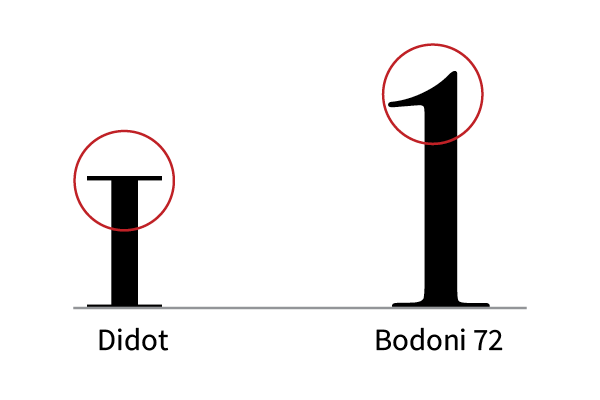
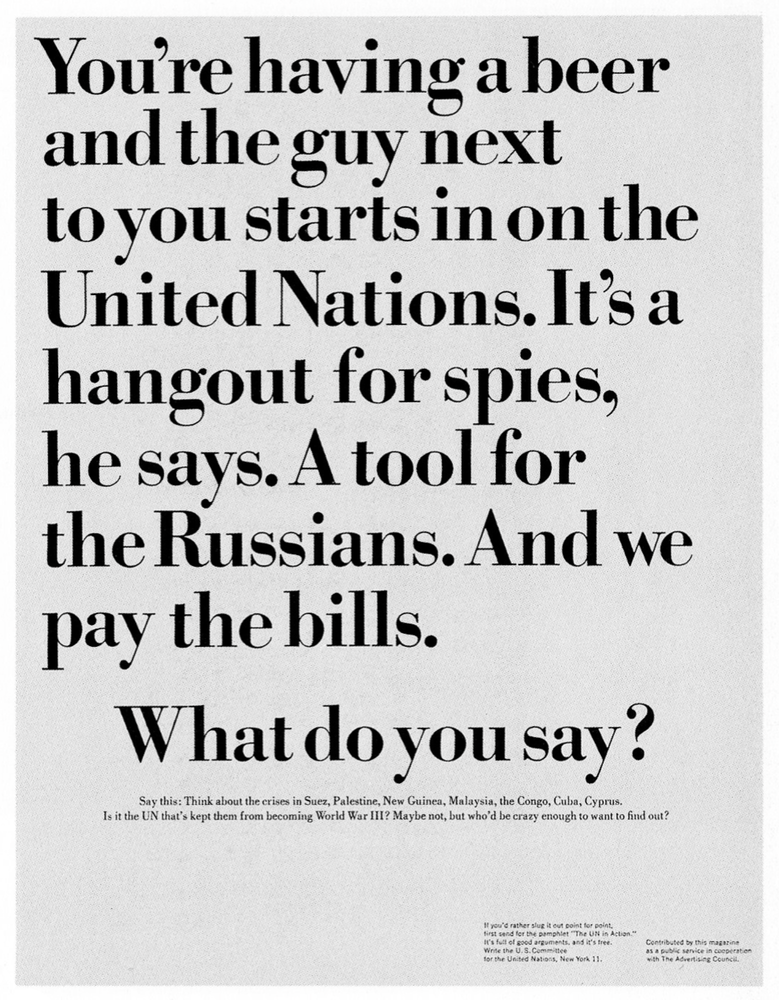

Didot is a serif typeface designed by Firmin Didot, a successful print shop owner, in Paris between 1784 and 1811 for use in the printing business. The typeface is known for its increasing stroke contrast and condensed armature. It is considered to be a neoclassical font, just like the similar Bodoni. There have been several iterations of the typeface over the years, notably Linotype Didot by Adrian Frutiger in 1991, and CBS’s commissioned re-drawing of the font in 1996. Today, the font consists of 12 weights including oldstyle figures and graphic elements.
Didot has a few key differences from its peer Bodoni. The dollar sign has a single line crossing the ‘S’, the upper-case ‘J’ sits on the baseline, the top of the upper-case ‘W’ has three upper terminals, and the four is open. Didot is still widely considered one of the most fashionable fonts in typographic history.
Here is an overview of the Didot font.
Bodoni
Bodoni is a serif typeface originally designed by Giambattista Bodoni
in 1798. Bodoni was an expert printer and showcased the quality of his work in metal-casting and printing in his shop in Parma. The typeface
was first designed in the eighteenth century but has since been revised as people produce revivals and variants. Giambattista Bodoni gained inspiration from peers such as John Baskersville and Firmin Didot.
It was used in many Italian books and publications at first. In more recent years it has been used in advertising, movie posters,
restaurant menus and more. Bodoni is seen often in fashion and
architecture magazines. In relation to its versatility, Bodoni is
described that “it is simple enough to work for many things, but
stylistic enough to make an impression.
Bodoni is a modern style with a striking contrast between thick and
thin strokes. It has geometric forms with rounded sides that gives it
a fashionable feel. A striking quality of this font is its abrupt,
hairline serifs.
Here is an overview of the Bodoni font.
Comparison
Similarities
Both of the lowercase C charachters feature rounded serifs.Both fonts has an increase in thickness around the curve in the lowercase S.They also feature vertical serifs on the bottom.Both fonts feature a curved lowercase G with a rounded serif. The lobe of the G is connected and drops below the baseline.Both of the lowercase V figures have a large variation in width on the right side.Both of the lowercase i figures have a straight serif on the bottom.
Differences
As you can see, the serif on the letter d is straight in the Didot font and curved in the Bodoni font.The width also different between the two d figures. Didot is more angular, while Bodoni is more curved.As you can see, the serif on the letter N is straight in the Didot font and curved in the Bodoni font.Here you can see that in the n charachter Didot is more angular, while Bodoni is more curved. Although they are similar heights, the curve of the n is wider in the Didot font.In the lowercase E character, Bodoni is slightly more condensed. The counter of the figure is also higher in Bodoni. The stress of the lowercase O figure is wider in the Didot font.

As you can see, the number one is very different between the two fonts. Didot's 1 is a short and stocky oldstyle figure. Bodoni features a tall one with a curved serif.The number 3 is very different. In Didot, the figure uses smaller lines and tighter angles. Bodoni uses move vaiation in width and curved serifs.The Didot font has a curved top bar, while Bodoni's is straight. The bottom serif is also more curved in the Bodoni figure.In the 8 figure, Didot has a more integrated and curved appearance, with one continuous line. Bodoni, on the other hand, has thicker curves and appears stacked. It is also wider than the Didot figure.The exclamation point in Didot is rounded, while in Bodoni it is pointed and tapered.The pound symbol in Didot is very light. All strokes are the same width. Bodini has wide strokes with varying width.When comparing the quotation marks, we can see that Didot has more elongated and open figures than Bodoni. Bodoni is also thicker.
Examples and visual references
Didot
This is the book cover for Richard Avedon's book, "Observations". It was published in 1959, designed by Alexy Brodovich.A Vouge magazine cover featuring Didot dated January 15, 1945. 101 Essays That Will Change The Way You Think by Brianna Wiest.Magazine design for Pan & The Dream Magazine. Issue 1: The Emperor’s New Clothes, featuring Didot.Invincible is the tenth and final studio album by Michael Jackson, featuring Didot.
Bodoni
Program for the “Born In The U.S.A. Tour” (1984) by Bruce Springsteen and the E Street Band.

United States Committee for the UN ad, published in 1964.The Touch of Your Hand album art by Mario Lanza, 1955.Roman numerals and Bodoni caps for an ad for Ruffino wine from MCMLXV, or 1965.Mother's Milk - part of the Patrick Melrose Novels by Edward St. Aubyn, featuring Bodoni.